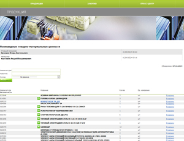
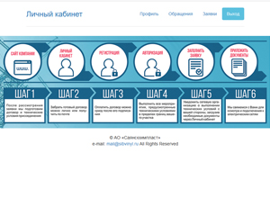
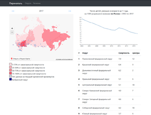
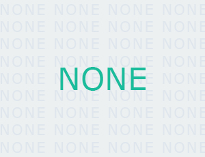

CRM-система компании Гудвил Холдинг
ООО "Гудвил Холдинг"
2019-2020
Интернет-магазин лодочных моторов и лодок "NWMOTORS"
ООО "Гудвил Холдинг"
2019-2020
Интернет-магазин запчастей для двигателей индустриальной техники
ООО "Гудвил Холдинг"
2019-2020
Интернет-магазин б/у запчатей для грузовой техники
ООО "Гудвил Холдинг"
2019-2020
Электронный документооборот подразделения УИТиС
АО "Саянскхимпласт"
2017-2019
Раздел на внешнем сайте по продаже неликвидных товарно-материальных ценностей
АО "Саянскхимпласт"
2019
Учёт численности персонала для ГОиЧС
АО "Саянскхимпласт"
2018
Личный кабинет технологического присоединения
АО "Саянскхимпласт"
2017
Система оценки подразделений
АО "Саянскхимпласт"
2017
Система учёта заявок в службу КОИР
АО "Саянскхимпласт"
2016
Система непрерывного совершенствования (Кайдзен)
АО "Саянскхимпласт"
2016
АИС учёта пациентов и их анализов
ОГБУЗ "Саянская городская больница"
2019
Прототип АИС анализа и визуализации результатов создания общероссийской сети перинатальных центров
Счетная палата Российской Федерации
2019
Прототип АИС анализа и прогнозирования следующей даты обращения и вида заказываемой госуслуги
ГАУ "Иркутский областной многофункциональный центр предоставления государственных и муниципальных услуг"
2019